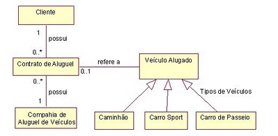

Ela consiste na padronização de algumas notações para facilitar o entendimento entre os times de desenvolvimento que eventualmente irão lidar com um determinado sistema.
Um dos diagramas mais comuns de ser representado utilizando a UML é o diagrama de classe. A função dele é representar as estruturas e relações entre as classes de um projeto e interfaces com outros sistemas. Aqui está um exemplo:
Neste diagrama, representamos a existência de uma relação por uma reta e as associações são indicadas por setas. Os números que acompanham as retas indicam a quantidade de itens que estão se relacionando. No exemplo, 1 cliente pode possuir 0 ou mais contratos de aluguel, enquanto um contrato de aluguel só pode se referir a 0 ou 1 veículo alugado.
Site para montar UML